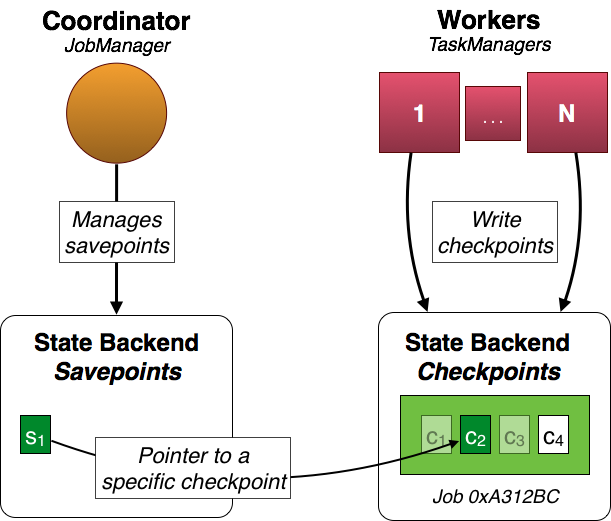

Savepoints
程序写在 Data Stream API，它可以从一个 保存点（savepoint） 恢复执行。保存点（savepoint）允许更新用户的程序或者 Flink 集群，而不会丢失任何数据。当前页面包含了所有到触发、还原、处理保存点（savepoint）的步骤。如果想了解更多关于 Flink 处理中间状态和错误的细节，请参考 State in Streaming Programs 和 Fault Tolerance 页面。
Overview
保存点（savepoint）是手动触发的checkpoints，它会对程序做一个镜像，并更新它（snapshot）到后台存储。为此他们依靠定期检查点机制。在运行中，程序会定期在工作节点上做快照，并产生一些检查点。恢复时，恢复到最近完成的检查点（checkpoint），在新检查点完成时，可以安全的删除旧的检查点。
保存点（savepoint）和定期检查点是十分相似的，不同点是当新检查点完成之后，他们是 用户触发 和 不自动过期 。

在以上的例子中，工作节点为任务 0xA312Bc 创建了以下检查点：c1, c2, c3, and c4。定期的检查点 c1 和 c3 已经被 丢弃 ，检查点 c4 是 最新的检查点。 c2 是一个特殊的检查点. 它和保存点（savepoint） s1 存在一定关系，并且 c2 是由用户触发并且它并不会自动过期(当新的检查点完成后， c1 和 c3 会去执行过期操作)。
注意： s1 只是指向 真实检查点c2。 这意味着，保存点（savepoint）的实际状态是不可复制的，并且会保留定期检查点的数据。
Configuration
Savepoints 指向周期性的检查点，并按照 state backend 的配置保存位置信息。当前支撑的后台状态存储是jobmanager 和 filesystem 。定期检查点的后台状态存储的配置和保存点（savepoint）的后台状态存储的配置是 独立的。检查点数据并不是 savepoint 的 副本 ，但是指向已配置的在后台存储上的存储点（checkpoint）。
JobManager
JobManager 是 savepoints 的 默认后台。
Savepoints 保存在 job manager 的堆内存中。当 job manager 停止后， 保存点（Savepoints） 也会 丢失。这种模式下，在运行的 same cluster 上执行 stop 和 resume 才会生效。这种方式 不推荐 在生产环境使用。 保存点（Savepoints） 并 不 是 job manager’s highly available 状态的一部分。
savepoints.state.backend: jobmanager
注意： 如果不配置 保存点（savepoints） 的后台状态存储，就会使用 jobmanager 作为后台状态存储。
File system
Savepoints 存储在配置项 file system directory 中。他们在集群实例中是可用的，并且允许移动程序到其他的集群。
savepoints.state.backend: filesystem savepoints.state.backend.fs.dir: hdfs:///flink/savepoints
Note: 如果不单独指定目录，后台状态存储就会使用job manager。
重要: 一个 保存点（savepoint） 是一个指向已完成的检查点的指针。意味着，在 savepoint 自己的文件中找不到 savepoint 的状态，但是它（savepoint）需要真实的检查点数据 (e.g. in a set of further files)。毕竟，savepoints 配置了 filesystem 后台后， 检查点的 jobmanager 并不会工作。因为必需的检查点数据在 job manager 重启后不可用。
Changes to your program
Savepoints 是out of the box 方式运行，但强烈建议用户微调程序，从而在未来的用户程序版本中，可以在 savepoint 下工作。
关于 savepoints only stateful tasks matter. 在上面的例子中，source 和 map tasks 是有状态的，但 sink是无状态的。毕竟，只有source 和 map tasks 的状态属于 savepoint 的一部分。
每个任务都有自己的 自增id 和 子任务索引。在上面的例子中，source (s1, s2) 的状态和map tasks (m1, m2) 都以他们的 task id(0xC322EC for the source tasks and 0x27B3EF for the map tasks)和 subtask index 进行标识，sinks (t1, t2)并没有状态，他们的id没有意义。
重点 这些 ID 是从你的程序结构中以确定性的方式自动生成的。这意味着只要程序不修改，这些 id 也不会更改。 唯一可以改变的是用户函数中的内容，比如：用户可以修改 MapFunction 的实现，而不是修改 topology。 在这种情况下，直接从保存点（savepoint）恢复状态，通过将他们影射成相同的 task ids 和 subtask index。这允许用户开箱即用（out of the box）savepoint, 但只要用户改变了topology，就会导致问题，因为这样会导致id 发生变化，savepoint 里面的状态就不能影射到程序上了
推荐配置 为了能够修改程序和 拥有固定 IDs， DataStream 的api提供了接口,这些接口可以手动指定 task ID。每个操作都提供了 uid(String) 方法覆盖掉自动生成的 ID。ID 是 String 类型，它被哈希为一个16位哈希值。重要 的是：指定的 IDs 在每个transformation和job都是唯一的。如果不是这种情况，任务提交会失败。
DataStream<String> stream = env.
// Stateful source (e.g. Kafka) with ID
.addSource(new StatefulSource())
.uid("source-id")
.shuffle()
// The stateful mapper with ID
.map(new StatefulMapper())
.uid("mapper-id")
// Stateless sink (no specific ID required)
stream.print()Command-line client
你可以控制 savepoints 通过 command line client.
Current limitations
Parallelism: 恢复 savepoint 时，程序的并发必须和原来的 savepoint 已经完成的程序一致。savepoint 没有重分区的机制。
Chaining: 链接(chained)的操作由第一个task的 ID 来标示。不能为中间链接的task手动指定id，例如：在操作 [ a -> b -> c ] 中，只有 a 可以手动指定它的 ID, b 和 c 则不行。要解决这种情况可以参考 manually define the task chains。如果依赖自动的 ID 分配，对链接操作的改变同样导致 IDs 的改变。
Disposing custom state handles: 处理旧的 savepoint 不能自定义状态句柄（如果启用了自定义状态后端），因为在处置过程中，用户的代码加载器不可用。